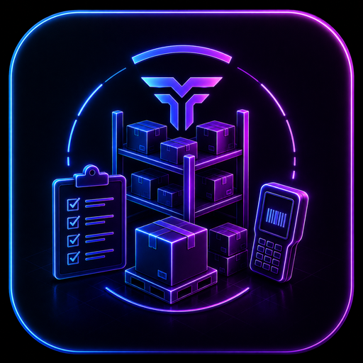
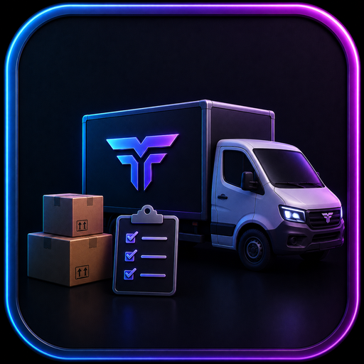
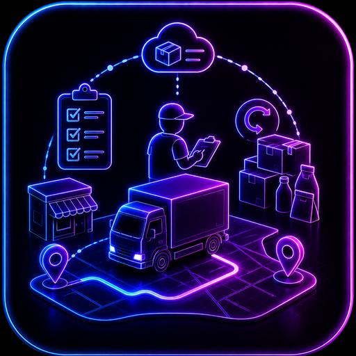
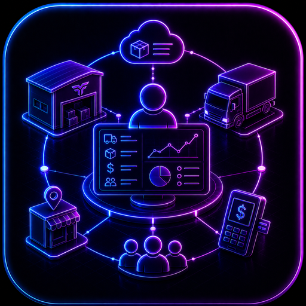
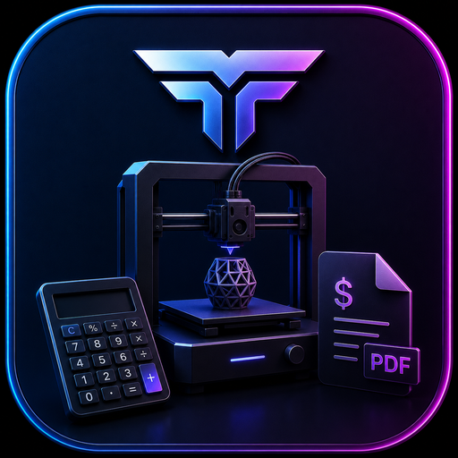
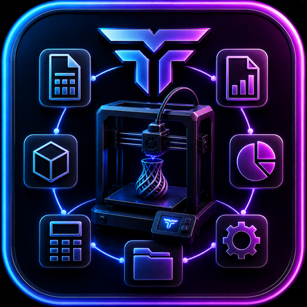
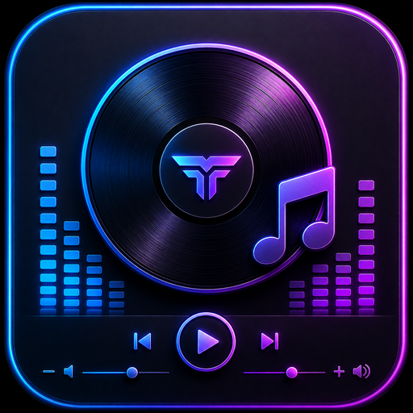
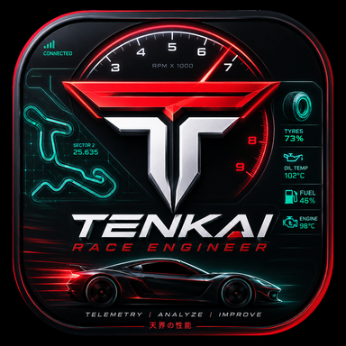

Windows y Android · 1.1.0+98
Tenkai POS
Punto de venta offline-first para comercio, inventario, caja y crecimiento modular sin obligar al negocio a depender de una suscripción.
Catálogo completo
Cada tarjeta abre una página individual. Las versiones y capacidades se verificaron contra los proyectos actuales en Tenkai Apps.
Comercio e inventario
Windows y Android · 1.1.0+98
Punto de venta offline-first para comercio, inventario, caja y crecimiento modular sin obligar al negocio a depender de una suscripción.
Android · 1.1.0+5
Aplicación móvil para celular enlazada a Tenkai POS para contar, auditar y recibir mercancía desde el piso.
Android · 1.1.0+5
Caja Android para tablet conectada al mismo cerebro de Tenkai POS y abrir otra terminal sin duplicar el catálogo.
Android · 1.0.0+5
Caja de contingencia offline para tablet, capaz de continuar vendiendo cuando el POS o la red no están disponibles.
Windows · 0.2.0+3
Centro de almacén y sucursales para preparar inventario, embarques y auditorías con transferencias verificables.

En desarrollo activoAndroid · 1.0.1+2
Compañero móvil de Tenkai Routes para conteos, recepción y trabajo de almacén bajo permisos.
Proveedores y rutas
Personal funciona de forma autónoma; Host, Client y Admin forman la operación coordinada.

DisponibleAndroid · 1.1.1+11
Operación autónoma para un vendedor o proveedor que administra una ruta desde el teléfono.
Android · 1.1.1+11
Centro del proveedor para coordinar catálogo, colaboradores, rutas, cargas y cuentas.

DisponibleAndroid · 1.1.1+11
Aplicación de ruta para el vendedor autorizado por un Host.

DisponibleAndroid · 1.1.1+11
Cuenta delegada para supervisar la operación sin compartir credenciales del propietario.
Makers y creatividad

Disponible en Google PlayAndroid y PWA · 1.1.5+27
Calculadora de costos y cotizador FDM/resina, disponible en Android y como PWA instalable en iOS.

Disponible en Google PlayAndroid · 1.1.3+14
Suite de cálculo y gestión para talleres de impresión 3D, resina, láser, cortadora y router.
Host y clientes · Hoja de ruta
Evolución propuesta para coordinar varios puestos o dispositivos de un taller bajo modelo Host–Client.

En revisión en Google PlayAndroid · 1.0.10+12
Reproductor local de música y video que respeta las carpetas y archivos del usuario.

ConceptoPor definir · Hoja de ruta
Línea conceptual de herramientas para automovilismo virtual y análisis de sesiones.